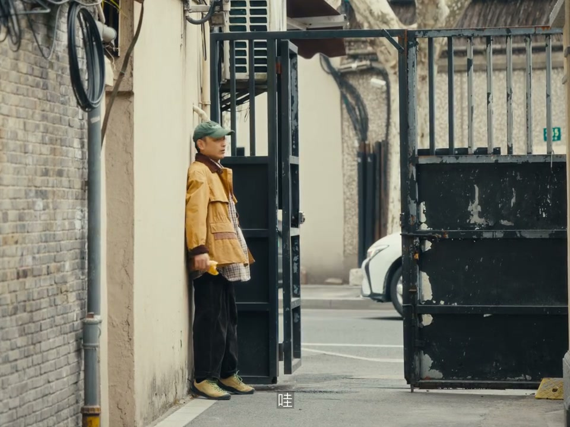

内容要点
这段视频围绕「跑起来！让VLOG更有生命力！」展开，按时间介绍其中的关键环节。想要让你的LOG更有生命力。
开场引入
想要让你的LOG更有生命力。这个奇怪的男人不断重复这句话。这几天他一直拿著这个竿子跟著我。口中念念一次。生命力想要嘛 很简单。跑起来 跑起来就可以了。看给他嘛。刚才的这一段其实就展示了跑起来在vlog里非常重要的作用。引导音乐 提快节奏。这应该是你经常遇到的问题

核心内容
是不是明显右边比左边看起来跑得更快。这就涉及到两个要点。长焦和参照物。前后快速略过的参照物会显得你跑得更快。而长焦带来的空间压缩会让前后景看起来离你更近。也就会让他们在画面中运动得更快。如果只用长焦 但没有参照物。速度感也是出不来的。所以选择一个合适的场景也非常重要。但有前景的地方
拍摄与画面处理
能不能换个大根葱的稳定器。所以它可以在长焦下追踪人。并且有东西对个人理事。最多也不会丢。最好还能帮你构图的手机稳定器。就很有必要。而恰好。这台Insta360 Floor 2 Pro就可以做到这几点。而且它这个很简单。不需要调瓶

开场与主题引入
有时候人数就是和生命力成正比。更重要的是。观众应该不会再盯著你的脸看了。在前面这些画面中。这台Blood 2 Pro依然发挥了重要作用。首先它是可以同时追踪多人的。往地上一放大概直观跑就行了。而且它的辅养范围也很大。你想拍的各种角度都不会受限制。它也加入了一些功能
总结收束
或者。就吃了他一口面包嘛。至于。现在你应该已经掌握了关于拍跑步。你所需要的大部分知识了。一次奔跑可以包含很多东西。压抑的释放。青春的自由。离别的不舍。每当我们在影像中看到这个动作

总结
或者。